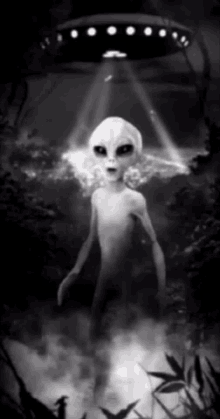

Skywatcher
Es la gente que presta atención al cielo, cuestión que no todos hacen a pesar de que este estar
siempre sobre nosotros ya que algunos preferimos mirar las pantallas hacia el suelo. al mirar el cielo puedes encontrar
algunas cosas misteriosas como objetos voladores no identificados, los OVNIS.
SUPER SONICOS
PLASMA
Aquí estamos

I WANT BELEAVE IN ALIENS
volver